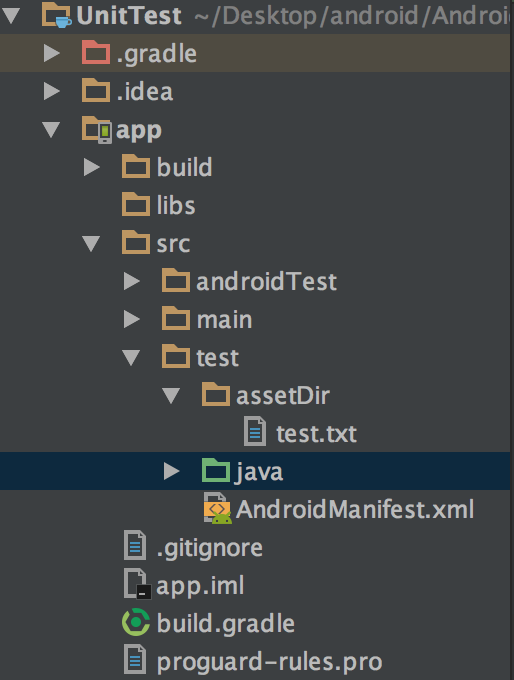
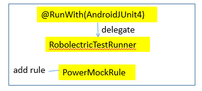

介绍
实现了一套JVM能运行的Android SDK，从而能够脱离Android环境进行测试
wiki：
依赖库
dependencies{
testImplementation 'androidx.text:core:1.2.0'
testImplementation 'org.robolectric:robolectric:4.3.1'
}
配置
方法
- robolectric.properties
- 包级的配置
- @Config
- 类级、方法级的配置（运行时）
- 优先级：
- @Config会覆盖robolectric.properties中的配置
- 方法级的配置会覆盖类级的配置
robolectric.properties File:
To configure all Robolectric tests within a package or group of packages, create a file named robolectric.properties in the appropriate package.
location:src/test/resources
example:
# src/test/resources/com/mycompany/app/robolectric.properties
sdk=18
shadows=my.package.ShadowFoo,my.package.ShadowBar
Build System Integration:
Starting with Robolectric 3.3, the test runner will look for a file named /com/android/tools/test_config.properties on the classpath. If it is found, it will be used to provide the default manifest, resource, and asset locations for tests, without the need to specify @Config(constants=BuildConfig.class) or @Config(manifest="...", res="...", assets="...") in your tests.
Keys in the file:
- android_merged_manifest: Full path to the project’s merged AndroidManifest.xml file.
- android_merged_resources: Full path to the project’s merged resources.
- android_merged_assets: Full path to the project’s merged assets.
- android_custom_package: Java packagename for the applications R class.
- androidresource_apk: Path to a resources.ap file that contains binary resources and XML files produced by aapt tool, as well as merged assets.
@Config配置
可以通过@Config注解来配置Robolectric运行时的行为。这个注解可以用来注释类和方法，如果类和方法同时使用了@Config，那么方法的设置会覆盖类的设置。如果你有很多测试类都采用同样的配置，那么你可以创建一个基类，通过@Config注解配置该基类，那么其他子类都能共享该配置。
配置 Constants
使用@RunWith(RobolectricTestRunner.class)时，必须要指定@Config(constants = BuildConfig.class)，这样它会从build/intermediates/目录下找到manifest、assets、resource等目录并加载相应的资源。
@Config(constants = BuildConfig.class)
配置 SDK 级别
By default, Robolectric will run your code against the targetSdkVersion specified in your manifest. If you want to test your code under a different SDK, you can specify the SDK using the sdk, minSdk and maxSdk config properties.
@Config(sdk = 23)
配置 Application
Robolectric will attempt to create an instance of your Application class as specified in the manifest. If you want to provide a custom implementation, you can specify it by setting:
@Config(application = BaseApplication.class)
配置 resource、assets、manifest路径
前面介绍配置constants属性时，Robolectric会自动加载build/intermediates目录下的资源文件，可以使用以下配置使Robolectric加载特定的资源文件。
@Config(assetDir = "some/build/path/assert",
resourceDir = "some/build/path/resourceDir",
manifest = "some/build/path/AndroidManifest.xml)
这里的路径很容易令人迷惑，必须要说明几点：
- 如果使用了@Config(constants = BuildConfig.class)，资源文件的路径会固定为build目录。避免constants配置与自定义manifest配置一起使用，否则后者配置会不生效。
- manifest设置的目录base于Unit Test Config里面的”Working Directory”
- resourceDir、assetDir的目录base于manifest的父目录。
@Config(manifest = "src/test/AndroidManifest.xml", assetDir = "assetDir")
@Test
public void testConfigAssetDir() {
Application app = RuntimeEnvironment.application;
try {
InputStream inputStream = app.getAssets().open("test.txt");
int length = inputStream.available();
byte[] buffer = new byte[length];
inputStream.read(buffer);
inputStream.close();
String txt = new String(buffer);
System.out.println(txt);
inputStream.close();
} catch (IOException e){
e.printStackTrace();
}
}

自定义manifest目录示意图
该例子配置了一个指定的AndroidManifest.xml文件以及assets文件目录，测试程序读取assets里test.txt文件内容并打印出来。manifest的相对路径就是“UnitTest”工程里的“app”模块所在的文件路径，assetDir的相对路径就是AndroidManifest.xml文件的父目录路径。
配置 限定符
下面的没懂
You can explicitly configure the set of resource qualifiers in effect for a test;
@Test @Config(qualifiers = "fr-rFR-w360dp-h640dp-xhdpi")
限定符表：
| Property | Calculated value (if unspecified) | Default | Other rules |
|---|---|---|---|
| MCC and MNC | None. | None | |
| Language, region, and script (locale) | None. | en-rUS | |
| Layout direction | The locale’s layout direction. | ldltr | |
| Smallest width | The smaller of width and height | sw320dp | |
| Width | If screen size is specified, the corresponding width as declared here. | w320dp | If screen orientation is specified, width and height will be swapped as appropriate. |
| Height | If screen size is specified, the corresponding height as declared here. If screen aspect is specified as long, the height is increased by 25%. | h470dp | If screen orientation is specified, width and height will be swapped as appropriate. |
| Screen size | If height and width are specified, the corresponding screen size as declared here. | normal | |
| Screen aspect | If width and height are specified, long will be used if the ratio of height to width is at least 1.75. | notlong | |
| Round screen | If UI mode is watch then round. | notround | |
| Wide color gamut | None. | nowidecg | |
| High dynamic range | None. | lowdr | |
| Screen orientation | If width and height are specified, port or land as appropriate. | port | |
| UI mode | None. | normal, except this property isn’t included in the qualifier list. | |
| Night mode | None. | notnight | |
| Screen pixel density | None. | mdpi | |
| Touchscreen type | None. | finger | |
| Keyboard availability | None. | keyssoft | |
| Primary text input method | None. | nokeys | |
| Navigation key availability | None. | navhidden | |
| Primary non-touch navigation method | None. | nonav | |
| Platform version | The SDK level currently active. Need not be specified. |
使用
例子
//通过注解设置测试类的TestRunner
@RunWith(RobolectricTestRunner.class)
@Config(constants = BuildConfig.class)
public class MainActivityTest {
@Test
public void testClickBtnShouldStartSampleActivity() {
MainActivity mainActivity = Robolectric.setupActivity(MainActivity.class);
mainActivity.findViewById(R.id.btn_main).performClick();
Intent expectedIntent = new Intent(mainActivity, RobolectricSampleActivity.class);
Intent actualIntent = shadowOf(mainActivity).getNextStartedActivity();
Assert.assertEquals(expectedIntent.getComponent(), actualIntent.getComponent());
}
}
Activity
生命周期
在各个生命周期回调中修改Button的文本内容
public class MainActivity extends Activity {
Button mBtn;
@Override
protected void onCreate(Bundle savedInstanceState) {
super.onCreate(savedInstanceState);
setContentView(R.layout.activity_main);
mBtn = (Button) findViewById(R.id.btn_main);
mBtn.setText("onCreate");
mBtn.setOnClickListener(new View.OnClickListener() {
@Override
public void onClick(View v) {
Intent intent = new Intent(MainActivity.this, RobolectricSampleActivity.class);
startActivity(intent);
}
});
}
@Override
protected void onStart() {
super.onStart();
mBtn.setText("onStart");
}
@Override
protected void onResume() {
super.onResume();
mBtn.setText("onResume");
}
@Override
protected void onPause() {
super.onPause();
mBtn.setText("onPause");
}
@Override
protected void onStop() {
super.onStop();
mBtn.setText("onStop");
}
@Override
protected void onDestroy() {
super.onDestroy();
mBtn.setText("onDestroy");
}
}
测试代码如下：
@Test
public void testActivityLifeCycle() {
ActivityController<MainActivity> controller = Robolectric.buildActivity(MainActivity.class);
//会调用Activity的onCreate()方法
controller.create();
Button btn = (Button) controller.get().findViewById(R.id.btn_main);
System.out.println(btn.getText().toString());
controller.start();
System.out.println(btn.getText().toString());
controller.resume();
System.out.println(btn.getText().toString());
controller.pause();
System.out.println(btn.getText().toString());
controller.stop();
System.out.println(btn.getText().toString());
controller.destroy();
System.out.println(btn.getText().toString());
}
控制台打印结果如下所示：
onCreate
onStart
onResume
onPause
onStop
onDestroy
setupActivity()与buildActivity()
前面的示例中看到有2种创建Activity的方式：
//直接创建一个Activity，创建后的Activity会经历onCreate()->onStart()-onResume()这几个生命周期
MainActivity mainActivity = Robolectric.setupActivity(MainActivity.class);
//创建一个ActivityController，然后需要自己手动控制Activity的生命周期
ActivityController<MainActivity> controller = Robolectric.buildActivity(MainActivity.class);
这2种方式有什么差别呢，查看setupActivity()的源码可以看到：
//实际上是调用了buildActivity()来创建Activity
public static <T extends Activity> T setupActivity(Class<T> activityClass) {
return buildActivity(activityClass).setup().get();
}
//这里手动控制了Activity的生命周期create()->start()->resume()
public ActivityController<T> setup() {
return create().start().postCreate(null).resume().visible();
}
Toast
//点击button弹出toast信息
mBtn.setOnClickListener(new View.OnClickListener() {
@Override
public void onClick(View v) {
Toast.makeText(MainActivity.this, "toast sample", Toast.LENGTH_SHORT).show();
}
});
@Test
public void testToast() {
MainActivity activity = Robolectric.setupActivity(MainActivity.class);
Button btn = (Button) activity.findViewById(R.id.btn_main);
btn.performClick();
Assert.assertNotNull(ShadowToast.getLatestToast());
Assert.assertEquals("toast sample", ShadowToast.getTextOfLatestToast());
}
Dialog
@Test
public void testDialog() {
MainActivity activity = Robolectric.setupActivity(MainActivity.class);
Button btn = (Button) activity.findViewById(R.id.btn_main);
btn.performClick();
Assert.assertNotNull(ShadowAlertDialog.getLatestAlertDialog());
}
资源文件
@Test
public void testApplication() {
Application app = RuntimeEnvironment.application;
Context shadow = ShadowApplication.getInstance().getApplicationContext();
Assert.assertSame(shadow, app);
System.out.println(shadow.getResources().getString(R.string.app_name));
}
Fragment
@Test
public void testFragment() {
TestFragment fragment = new TestFragment();
//该方法会添加Fragment到Activity中
SupportFragmentTestUtil.startFragment(fragment);
Assert.assertThat(fragment.getView(), CoreMatchers.notNullValue());
}
日志输出
使用ShadowLog
Shadow
顾名思义就是影子类，Robolectric定义了很多shadow class，用来修改或者扩展Android OS中类的行为。当一个Android中的类被实例化时，Robolectric会去寻找对应的影子类，如果找到了则会创建一个影子对象并与之相关联。每当Android类中的一个方法被调用时，Robolectric会保证其影子类中相应的方法会被先调用。这对所有的方法都适用，包括static和final类型的方法。
Shadows.shadowOf(...);
通过该方法几乎可以获取大部分Android类的shadow class，例如：
@Test
public void testShadow() {
MainActivity activity = Robolectric.setupActivity(MainActivity.class);
Button btn = (Button) activity.findViewById(R.id.btn_main);
ShadowActivity shadowActivity = Shadows.shadowOf(activity);
ShadowTextView shadowTextView = Shadows.shadowOf(btn);
}
Shadow Classes
public class Company {
public void welcome() {
System.out.println("method called in Company.");
}
public void sayHello() {
System.out.println("say hello in Company.");
}
}
//通过@Implements注解来声明shadow类
@Implements(Company.class)
public class ShadowCompany {
//通过@Implementation注解来标记shadow方法，此方法声明必须与原Company中的方法声明一致
@Implementation
public void welcome() {
System.out.println("method called in ShadowCompany.");
}
}
Shadows.shadowOf()方法不能作用于自定义shadow class，为了使Robolectric能够识别自定义shadow类，需要采用@Config注解，如下所示：
//通过shadows配置自定义的shadow class
@Config(shadows = {ShadowCompany.class})
@Test
public void testShadow() {
Company company = new Company();
company.welcome();
company.sayHello();
}
执行该测试方法，控制台打印结果如下：
method called in ShadowCompany.
say hello in Company.
从以上控制台打印结果中可以看到，welcome()方法实际执行的是ShadowCompany中的方法。
Shadowing Constructors
如果需要对构造函数进行shadow，必须实现constructor方法，并且该方法的参数必须与构造函数的参数一样。我们稍微修改前面的Company类以及ShadowCompany类，对其构造函数进行shadow。
public class Company {
private String name;
//构造函数有一个参数name
public Company(String name) {
this.name = name;
System.out.println("company constructor");
}
public void welcome() {
System.out.println("method called in Company.");
}
public void sayHello() {
System.out.println("say hello in Company.");
}
}
@Implements(Company.class)
public class ShadowCompany {
//必须实现该方法，参数与构造函数参数一样
public void __constructor__(String name) {
System.out.println("constructor in shadow class.");
}
@Implementation
public void welcome() {
System.out.println("method called in ShadowCompany.");
}
}
这个时候再执行测试代码，返回结果如下，可以看到Company的构造函数并没有执行。
constructor in shadow class.
method called in ShadowCompany.
say hello in Company.
Getting access to the real instance
有时shadow类需要使用它们关联的真实对象，可以通过@RealObject注解声明一个属性来实现。
@Implements(Company.class)
public class ShadowCompany {
//Robolectric会自动设置真实的关联对象
@RealObject
private Company company;
@Implementation
public void welcome() {
System.out.println("method called in ShadowCompany." + company.getName());
}
}
自定义shadow要点
- @Implements注解指定需要对哪个类进行shadow；
- @Implementation指定需要对哪个方法进行替换；
- 使用constructor来对构造器进行替换；
- @RealObject来引用真实的关联对象；
Robolectric的参数化测试
前面介绍JUnit4的时候讲到，JUnit4中有个叫Parameterized的test runner，能够实现参数化测试，同样Robolectric也提供了同样的功能。
@RunWith(ParameterizedRobolectricTestRunner.class)
@Config(constants = BuildConfig.class, sdk = 23)
public class ParameterizedTest {
@ParameterizedRobolectricTestRunner.Parameters
public static List data() {
return Arrays.asList(new Integer[][] {
{1, 1},
{2, 2},
{3, 3},
{4, 4}
});
}
private int i;
private int j;
public ParameterizedTest(int i, int j) {
this.i = i;
this.j = j;
}
@Test
public void testParameter() {
System.out.println("parameter is " + i + ", " + j);
}
}
运行结果如下：
parameter is 1, 1
parameter is 2, 2
parameter is 3, 3
parameter is 4, 4
内容更新
1.Robolectric配置
首先升级Robolectric的依赖至最新：
testImplementation "org.robolectric:robolectric:4.3.1"
在根目录的gradle.properties文件中添加：
android.enableUnitTestBinaryResources=true
之前的配置中，需要通过@Config注解指定constants = BuildConfig.class，也可指定sdk的版本信息：
@RunWith(RobolectricTestRunner.class)
@Config(constants = BuildConfig.class, sdk = 23)
public class MainActivityTest {
}
在4.0开始的版本中，默认不需要指定constants = BuildConfig.class，constants配置也被移除，所以默认可以去除@Config的这行固定配置。
如果要指定sdk版本的话，可以在src/test/resources目录下创建一个名为robolectric.properties的文件在你所要生效的包名下。其中更深的包中的值覆盖更浅的包中的值。当测试类或方法有@Config注释，这些注释覆盖属性文件中的任何配置。具体如下图所示：

这样相比之前的方式确实友好很多。详细配置及其他用法可以参看官方文档。
2.Robolecture与AndroidX
随着AndroidX的到来，Android官方也提供了相应的测试框架。
testImplementation 'androidx.test:core:1.2.0'
testImplementation 'androidx.fragment:fragment-testing:1.1.0'
// AndroidJUnitRunner and JUnit Rules
testImplementation 'androidx.test:runner:1.2.0'
testImplementation 'androidx.test:rules:1.2.0'
// Assertions
testImplementation 'androidx.test.ext:junit:1.1.1'
testImplementation 'androidx.test.ext:truth:1.2.0'
testImplementation 'com.google.truth:truth:1.0'
Robolectric在4.0开始也支持了官方测试库，并推荐使用它们。
变更有以下几个方面：
使用AndroidJUnit4代替RobolectricTestRunner:
// 之前
@RunWith(RobolectricTestRunner.class)
public class MainActivityTest {
}
// 现在
@RunWith(AndroidJUnit4.class)
public class MainActivityTest {
}
之前使用RuntimeEnvironment.application可以获取到Application，现在推荐使用getApplicationContext方法获取。
import androidx.test.core.app.ApplicationProvider.getApplicationContext
@Test
public void testResources() {
Application application = getApplicationContext();
String appName = application.getString(R.string.app_name);
assertEquals("AndroidUT", appName);
}
获取Activity方式调整。之前的方式是直接通过setupActivity或者buildActivity方法获取： MainActivity activity = Robolectric.setupActivity(MainActivity.class);
// 或者
ActivityController<MainActivity> controller = Robolectric.buildActivity(MainActivity.class);
MainActivity activity = controller.get();
现在：
@RunWith(AndroidJUnit4.class)
public class MainActivityTest {
@Rule
public ActivityTestRule<MainActivity> activityRule = new ActivityTestRule<>(MainActivity.class);
private MainActivity mainActivity;
@Before
public void setUp(){
mainActivity = activityRule.getActivity();
// 或者
ActivityScenario<MainActivity> scenario = ActivityScenario.launch(MainActivity.class);
scenario.moveToState(Lifecycle.State.CREATED);
scenario.onActivity(activity -> {
mainActivity = activity;
});
}
}
Fragment 获取方式大同小异，不过要注意添加testImplementation 'androidx.fragment:fragment-testing:1.1.0'依赖。
@Test
public void testFragment() {
FragmentScenario<SampleFragment> scenario = FragmentScenario.launch(SampleFragment.class);
scenario.onFragment(fragment -> assertNotNull(fragment.getView()));
}
对于官方测试库的详细使用可以查看Android的官方文档
3.AssertJ-Android 之前有提到AssertJ-Android这个库，它是AssertJ的拓展，便于我们断言Android View。
由于AndroidX的到来，这个库也就不太适用于未来。官方也觉得他并不是一个好的方式，所以暂停了维护。推荐我们使用Google的truth。并且truth这个库也内置在官方的测试框架里面。它和AssertJ很相似，有兴趣的可以了解一下。
这里我暂时没有使用truth，只是用 AssertJ的方式替换了 AssertJ-Android。仅仅是个人习惯问题。
之前的方式：
import static org.assertj.android.api.Assertions.assertThat;
@Test
public void testView() {
// Button是否可见
assertThat(mJumpBtn).isVisible();
// LinearLayout 方向，子View数量
assertThat(mRoot)
.isVertical()
.hasChildCount(4);
// CheckBox是否未选中
assertThat(checkBox).isNotChecked();
}
}
修改后：
import static org.assertj.core.api.Assertions.assertThat;
@Test
public void testView() {
// AssertJ-Android (已不在维护)，这里就是用普通方法实现
// Button是否可见
assertThat(mJumpBtn.getVisibility()).isEqualTo(View.VISIBLE);
// LinearLayout 方向，子View数量
assertThat(mRoot.getOrientation()).isEqualTo(LinearLayout.VERTICAL);
assertThat(mRoot.getChildCount()).isEqualTo(4);
// CheckBox是否未选中
assertThat(checkBox.isChecked()).isEqualTo(false);
}
4.当前依赖版本 以下是当前项目所用到的测试框架的依赖版本：
//junit
testImplementation 'junit:junit:4.12'
//mockito
testImplementation "org.mockito:mockito-core:3.1.0"
//powermock
testImplementation "org.powermock:powermock-module-junit4:2.0.2"
testImplementation "org.powermock:powermock-module-junit4-rule:2.0.2"
testImplementation "org.powermock:powermock-api-mockito2:2.0.2"
testImplementation "org.powermock:powermock-classloading-xstream:2.0.2"
//robolectric
testImplementation "org.robolectric:robolectric:4.3.1"
//AssertJ
testImplementation 'org.assertj:assertj-core:3.13.2'
// AndroidX所需
testImplementation 'androidx.test:core:1.2.0'
testImplementation 'androidx.fragment:fragment-testing:1.1.0'
// AndroidJUnitRunner and JUnit Rules
testImplementation 'androidx.test:runner:1.2.0'
testImplementation 'androidx.test:rules:1.2.0'
// Assertions
testImplementation 'androidx.test.ext:junit:1.1.1'
testImplementation 'androidx.test.ext:truth:1.2.0'
testImplementation 'com.google.truth:truth:1.0'
最后我将修改后的代码也已经同步到了Github上，master分支是使用support 28.0依赖库的，androidx部分的改动放在了androidx分支上，便于大家查阅。
内容暂时就这么多。后面如果新的改动，我也会更新在这篇博客当中。
2020.01.16更新：
更新gradle至3.x以后，原本的存放class文件目录发生了改变。所以使用jacoco时，需要修改指定的类文件夹(检查的覆盖类)地址：
/intermediates/classes/debug
修改为：
/intermediates/javac/debug/compileDebugJavaWithJavac/classes
其他
Robolectric的局限性
- 不支持JNI调用。凡是涉及到JNI调用的方法，都不能使用Robolectric来进行单元测试。对于复杂的应用，或多或少都会有JNI调用，可行的方案是设置一个全局变量来控制是否加载so库。
Test Runner config(Robolectric + PowerMock)
| framework | corresponding test runner | rule |
|---|---|---|
| Mock | MockitoJUnitRunner | MockitoJUnit.rule() |
| PowerMock | PowerMockRunner | PowerMockRule |
| Robolectric | RobolectricTestRunner | -- |
RunWith can only have one item, we can use AndroidJUnit4 to delegate
RobolectricTestRunner and add rule PowerMockRule to implement
Robolectric + PowerMock

Espresso & Robolectric
Espresso不适用于本地单元测试（Local Unit Test）。Espresso是一个用于编写UI自动化测试的框架，它旨在模拟用户与应用程序交互的行为。它需要一个运行的设备或模拟器，并且与实际的应用程序进行交互。
Since Robolectric 4.0, Espresso APIs are now supported in Robolectric tests.
the Espresso detail:please refer to
https://developer.android.google.cn/training/testing/espresso?hl=en
simple usages in robolectric test:
@RunWith(AndroidJUnit4::class)
class FragmentTest{
@Test fun testEventFragment(){
val fragmentArgs = Bundle()
val factory = MyFragmentFactory()
val scenario = launchFragmentInContainer<MyFragment>(fragmentArgs,factory)
onView(withId(R.id.text)).check(matches(withText("Hello World")))
}
}